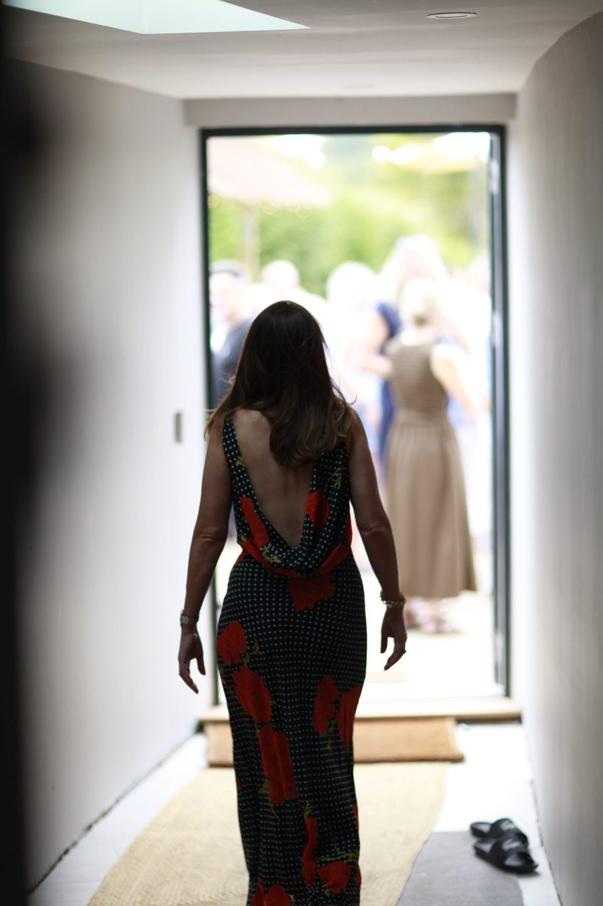
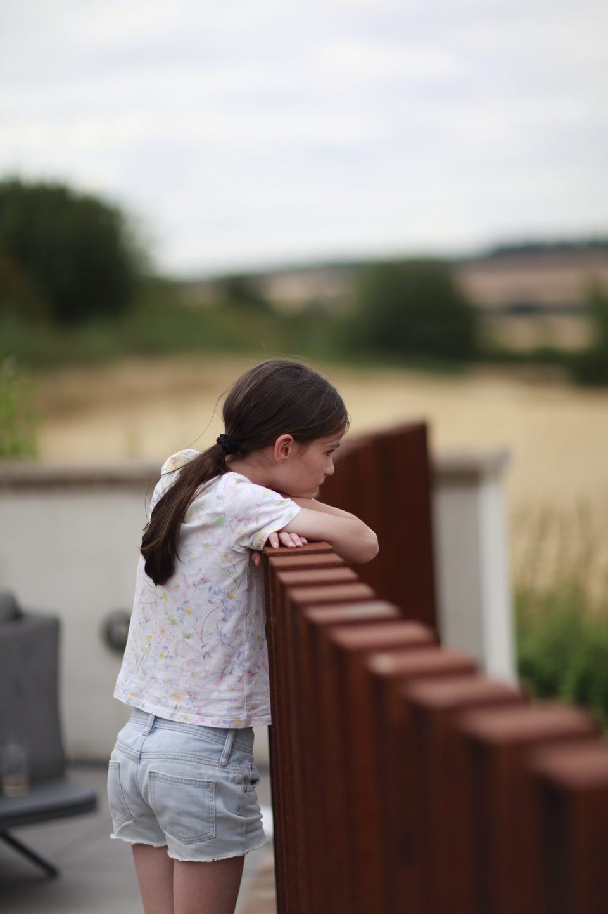
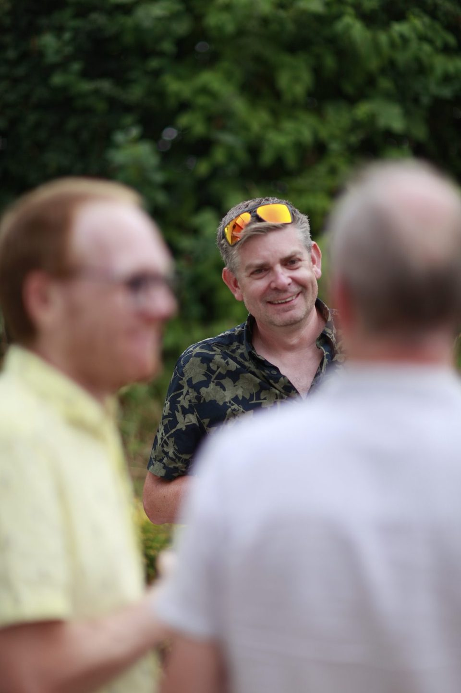
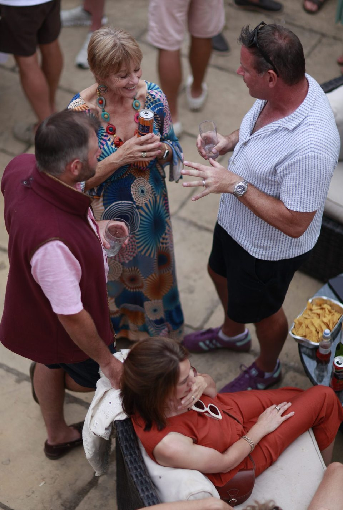
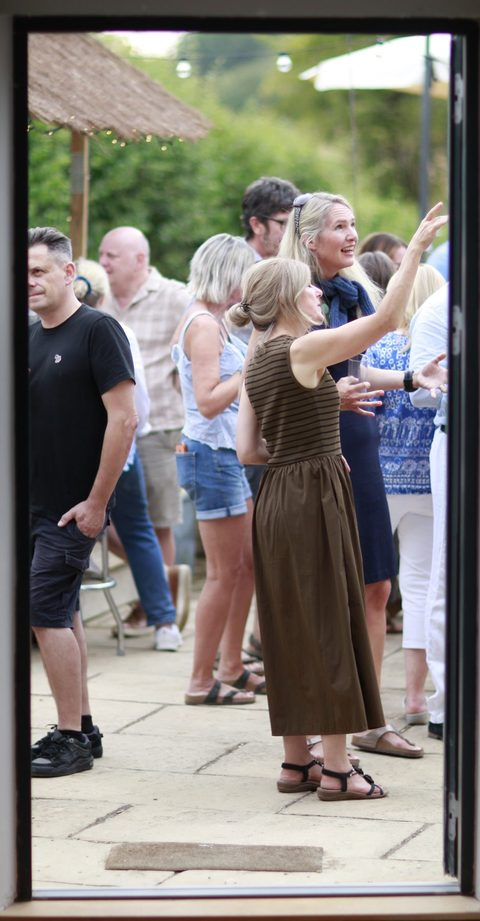
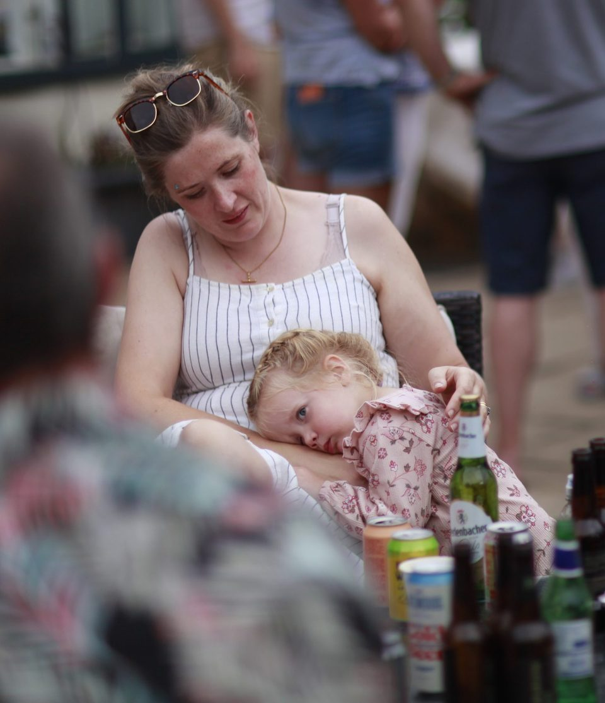
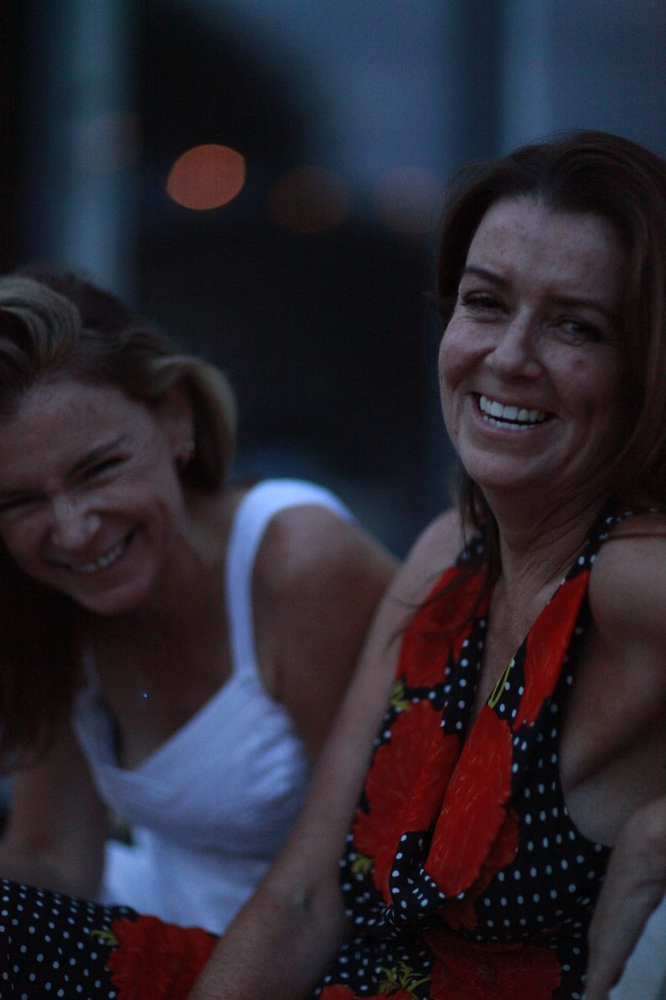
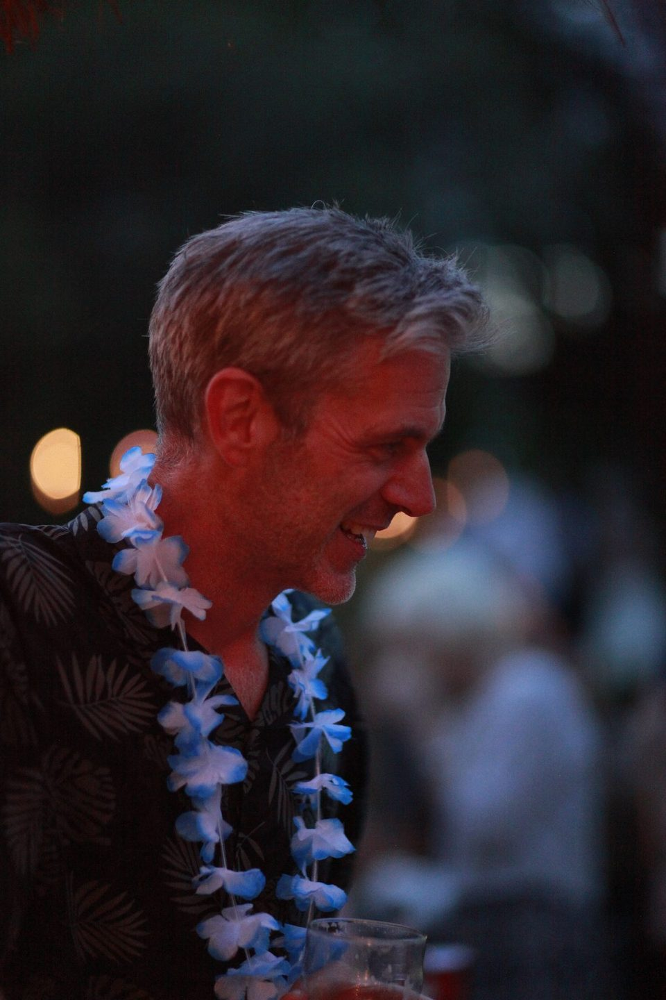
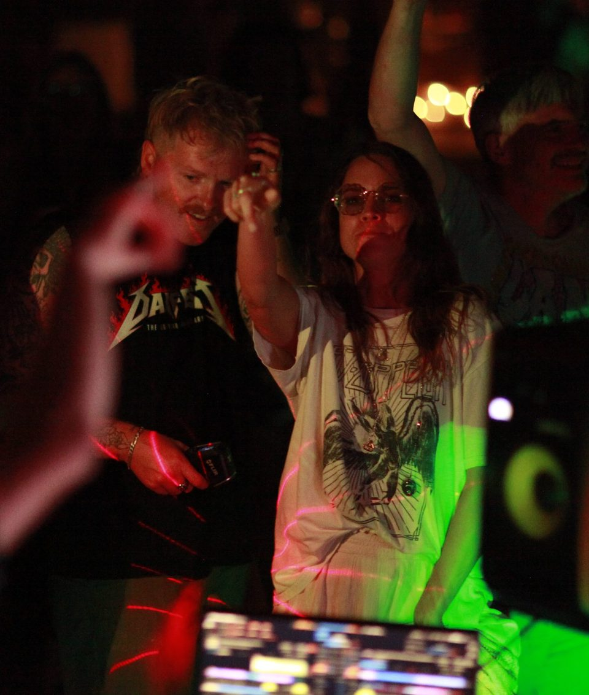

8 August 2026 · noon till midnight
DanFest
I turned 50, so I built a Ceefax service to invite everyone, put a bar in the garden and a DJ in the barn, and asked people to come for the day. They did. These are the photographs.
Setting up
The day before, and the morning of.


Daylight
Open house, kids welcome, weather behaving.






Food and drink
A bar, a barbecue, a paella the size of a table.


Everyone
The actual point of the whole thing.















After dark
DJs, a laser, and the lights I made earlier.

